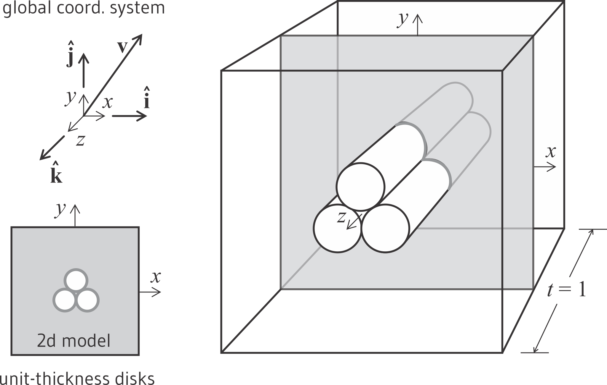

记号
本套文档自始至终采用以下记号。
向量以粗体表示，例如 \(\mathbf{v}\)。长度或大小记为 \(\left\| \mathbf{v} \right\|\) 或简记为 \(v\)。加上帽号表示单位向量，即 \(\hat{\mathbf{v}} = \mathbf{v} / \left\| \mathbf{v} \right\|\)。加上点号表示对时间的导数，例如 \(\dot{\mathbf{v}} = \partial \mathbf{v} / \partial t\)。
存在一个全局坐标系（\(xyz\)）。向量 \(\mathbf{v}\) 可在全局坐标系中表示为以下关系：
(1)\[\begin{split}\begin{array}{l} \mathbf{v} = \mathbf{v}(x,y,z) = v_x \hat{\mathbf{i}} + v_y \hat{\mathbf{j}} + v_z \hat{\mathbf{k}} \\ \mbox{with } v_x = \mathbf{v} \cdot \hat{\mathbf{i}},\; v_y = \mathbf{v} \cdot \hat{\mathbf{j}},\; v_z = \mathbf{v} \cdot \hat{\mathbf{k}} \end{array}\end{split}\]
其中 \(\hat{\mathbf{i}}\)、\(\hat{\mathbf{j}}\) 和 \(\hat{\mathbf{k}}\) 分别为沿 \(x\)、\(y\) 和 \(z\) 轴正方向指向的单位向量。二维和三维模型均使用全局坐标系。二维模型位于 \(xy\) 平面内，因此在 PFC 中产生以下约束（参见 图 1（Figure 1））：
颗粒和接触始终居中于 \(xy\) 平面内。
颗粒由单位厚度的圆盘组成。
力在 \(xy\) 平面内作用，因此
(2)\[\mathbf{F} = \mathbf{F}(x,y,z) = F_x \hat{\mathbf{i}} + F_y \hat{\mathbf{j}} + F_z \hat{\mathbf{k}} \quad (F_z \equiv 0).\]力矩垂直于 \(xy\) 平面作用，因此
(3)\[\mathbf{M} = \mathbf{M}(x,y,z) = M_x \hat{\mathbf{i}} + M_y \hat{\mathbf{j}} + M_z \hat{\mathbf{k}} \quad (M_x \equiv M_y \equiv 0).\]
三维模型没有此类约束。


图 1：全局坐标系及二维模型的方位，该二维模型由居中于 \(xy\) 平面内的单位厚度圆盘组成。
| 这些内容对您有帮助吗？… | FLAC3D © 2019, Itasca | 原文更新于 2020 年 10 月 8 日 |